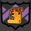

<mat-toolbar class="navbar" color="primary">
  <button mat-button routerLink="/">
    <span>Syncademy WebApp</span>
  </button>
  <button mat-button routerLink="/courses">
    <span>Courses</span>
  </button>
  <button mat-button routerLink="/group-composer">
    <span>Compose Course</span>
  </button>
  <button mat-button routerLink="/admin">
    <span>Admin</span>
  </button>
</mat-toolbar>

<div class="content" role="main">

  <router-outlet></router-outlet>

</div>